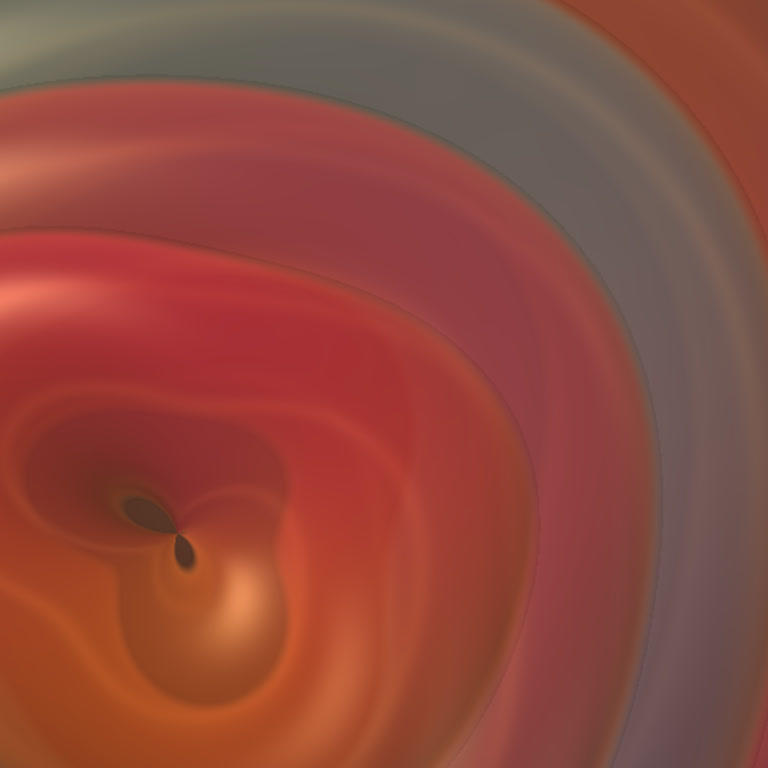
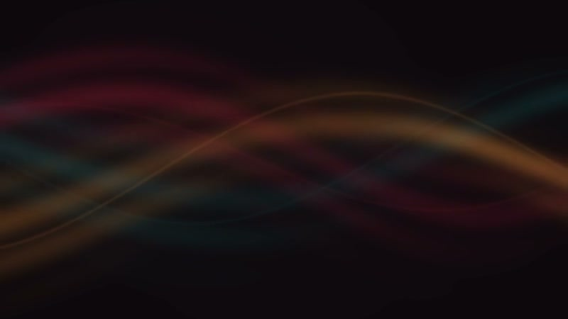
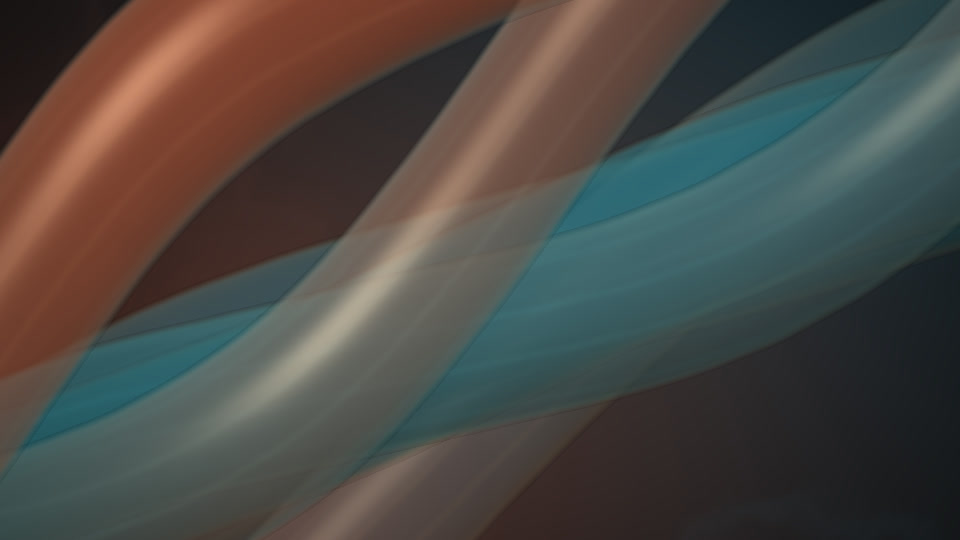

Enter this space
Enter this space
Guided stillness · 9 minutes
Still enough to listen
Be still. Notice your breath.
Perhaps hear your heartbeat.
A space to listen
A little room for your breath,
your body, your own quiet.
Welcome back. Make yourself at home.
Still enough to listenNine quiet minutes. Ready when you are.Four listening spaces
Each one is its own space. Stay with the one that meets you here.
Enter this space
Guided stillness · 9 minutes
Be still. Notice your breath.
Perhaps hear your heartbeat.

Enter this spaceGentle guidance · 9 min 30 sec
A warm voice. A little sound.
Nothing to do for a while.

Enter this spaceGuided listening · 11 min 25 sec
A place to loosen your hold on what others might think.

Enter this spaceGuided listening · 11 min
A moment to notice the life already here.
A gentle place to begin.
Explore at your pace
Earlier practices and sound are here to explore, too. Follow the kind of moment you need.
No sessions here yet. Save a favorite and it will appear in this space.
From listeners
A few notes people have left after listening.
“Your voice is calming and soothing, you have a gift!”
Colleen
“The music perfect, gorgeous pacing, a very nice voice.”
Amrita
“A wonderful moment to take in all that is available to me and be still.”
Sarah
“Been a while since I have felt so calm in a meditation.”
Francesca
“Surprisingly helpful for 2 1/2 minutes. Much appreciated. I'll be returning to this practice.”
E.
“My new favorite night meditation.”
Denice
Another way to listen
The earlier library also has a simple player here when you want it.
YOUR MOMENT
A short pause to feel your feet, find your breath, and begin again.
The listening room
Guided practice · 3 min
Transcript
A gentle record
Every minute counts. This record stays on this device, and it is here only for you.
Time together
0 minTime spent listening
Sessions completed
0At your own pace
Days you made space
0Whenever they happened
A little space today
0 minThe time you make is enough.
Your favorites and listening history stay in this browser.
Clear your listening time, saved places, and favorites on this device?
What felt good? What would you change? These optional notes stay on your device. Export a copy whenever you want to share them.